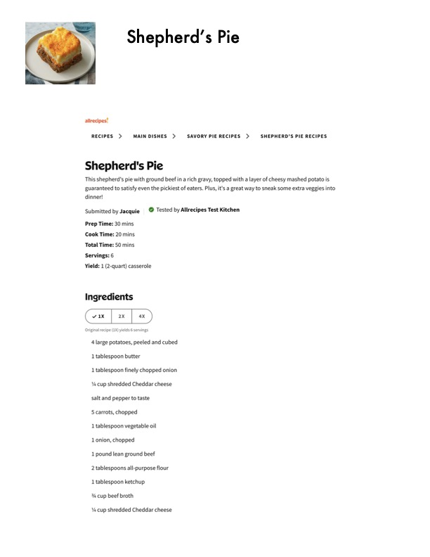

Shepherd's Pie

Original cookbook page 704
Ingredients
- 4 large potatoes, peeled and cubed
- 1 tablespoon butter
- 1 tablespoon finely chopped onion
- Ya cup shredded Cheddar cheese
- salt and pepper to taste
- 5 carrots, chopped
- 1 tablespoon vegetable oil
- Lonion, chopped
- 1 pound lean ground beef
- 2 tablespoons all-purpose flour
- 1 tablespoon ketchup
- 34 cup beef broth
- Ys cup shredded Cheddar cheese
Instructions
- This shepherd's pie with ground beef in a rich gravy, topped with a layer of cheesy mashed potato is guaranteed to satisfy even the pickiest of eaters.
- Prep Time: 30 mins Cook Time: 20 mins Total Time: 50 mins Servings: 6
- 1 tablespoon finely chopped onion Ya cup shredded Cheddar cheese salt and pepper to taste
Recipe #704 from collection